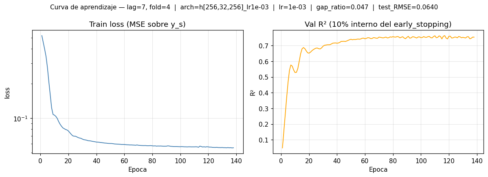
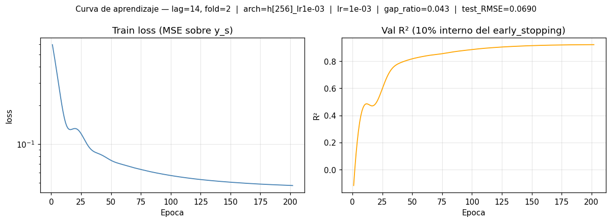
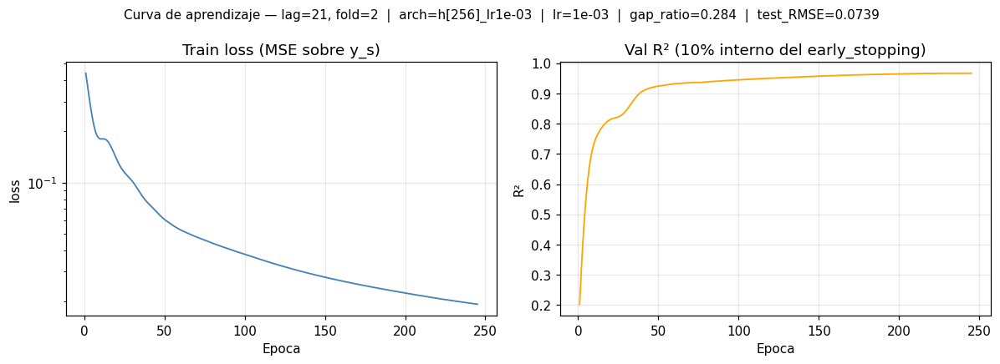
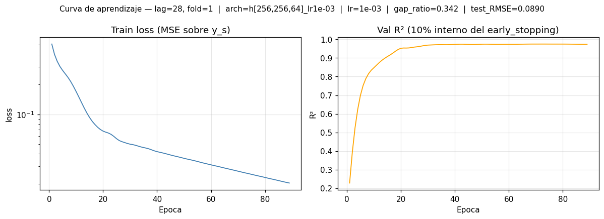
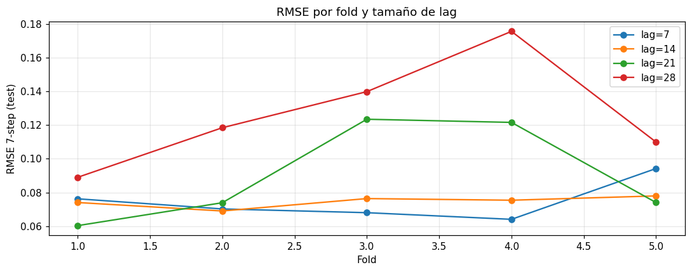
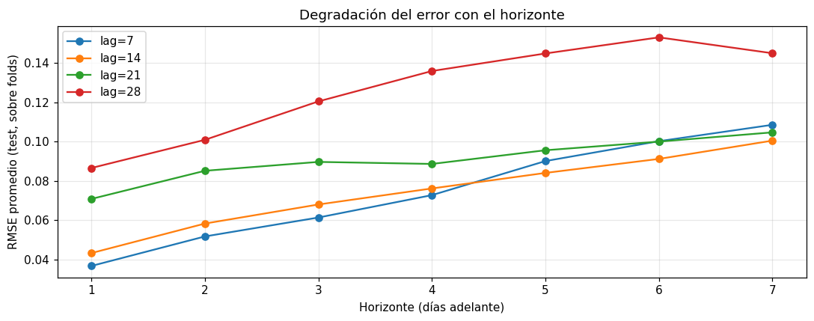
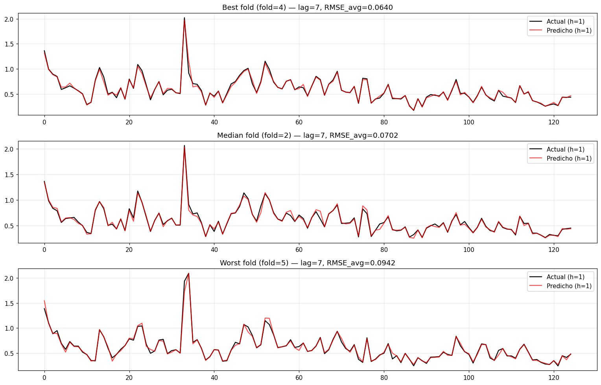

Notebook 2 — Entrenamiento del MLP#
Setup — imports y parámetros globales#
import time
import warnings
import itertools
from pathlib import Path
import joblib
import numpy as np
import pandas as pd
import matplotlib.pyplot as plt
from tqdm.auto import tqdm
from sklearn.preprocessing import StandardScaler
from sklearn.neural_network import MLPRegressor
from sklearn.exceptions import ConvergenceWarning
from tsxv.splitTrainValTest import split_train_val_test_groupKFold
# Rutas del proyecto
DATA_PATH = '../data/btc_1d_data_2018_to_2025.csv'
RESULTS_DIR = Path('../results')
FIGS_DIR = Path('figs')
RESULTS_DIR.mkdir(parents=True, exist_ok=True)
FIGS_DIR.mkdir(parents=True, exist_ok=True)
# Parámetros del enunciado (11.15)
WINDOW_SIZE = 30 # ventana rolling para la volatilidad
ANNUALIZATION = 365 # criptos cotizan 365 días
LAGS_LIST = [7, 14, 21, 28]
N_STEPS_FORECAST = 7 # horizonte multistep
N_STEPS_JUMP = 1 # paso entre ventanas
# Grid de arquitecturas — réplica exacta del template del profesor
# (architectures_dropout.ipynb): itertools.product sobre [32, 64, 128, 256]
# para n ∈ {1, 2, 3} capas => 4 + 16 + 64 = 84 topologías.
NEURONAS = [32, 64, 128, 256]
MAX_CAPAS = 3
ARCH_LIST = [
comb
for n_capas in range(1, MAX_CAPAS + 1)
for comb in itertools.product(NEURONAS, repeat=n_capas)
]
assert len(ARCH_LIST) == 4 + 16 + 64, f'Se esperaban 84 archs, hay {len(ARCH_LIST)}'
# Learning rate fijo — central del grid anterior, default de sklearn y seguro para
# las archs grandes con 256 neuronas. Sacrificamos el eje de lr para ganar fidelidad
# al template y robustez estadística vía múltiples semillas. Queda persistido en
# `config['mlp_params']['learning_rate_init']` y se grafica en la sección 5.c.
LR_FIXED = 1e-3
# Semillas para robustez estadística. Reportamos mean ± std sobre 3 seeds × 5 folds.
SEEDS = [0, 1, 2]
# Umbral del criterio del profesor (gap_ratio = |train_rmse - val_rmse| / val_rmse)
GAP_RATIO_THRESHOLD = 0.15
# Hiperparámetros base compartidos por todos los modelos. `learning_rate_init` se
# inyecta desde LR_FIXED; `random_state` barre SEEDS (se pasa por fit).
BASE_MLP_PARAMS = dict(
solver='adam',
activation='relu',
max_iter=500,
early_stopping=True,
validation_fraction=0.1,
n_iter_no_change=20,
tol=1e-4,
)
# Helper: nombre legible de una arquitectura. Incluimos el lr en el string para
# mantener estable el formato que nb4 espera (`h[64,128]_lr1e-03` → `[64, 128]`).
def config_name(hidden_layers, lr=LR_FIXED):
return f"h{list(hidden_layers)}_lr{lr:.0e}".replace(' ', '')
pd.set_option('display.float_format', lambda x: f'{x:,.6f}')
plt.rcParams['figure.dpi'] = 110
configs_per_fold = len(ARCH_LIST) * len(SEEDS)
total_fits = len(LAGS_LIST) * 5 * configs_per_fold
print(f'Arquitecturas (ARCH_LIST): {len(ARCH_LIST)} topologías')
print(f' 1 capa : {4 ** 1:3d} archs')
print(f' 2 capas: {4 ** 2:3d} archs')
print(f' 3 capas: {4 ** 3:3d} archs')
print(f'Learning rate fijo: {LR_FIXED:.0e}')
print(f'Semillas: {SEEDS}')
print(f'Fits por fold: {len(ARCH_LIST)} archs × {len(SEEDS)} seeds = {configs_per_fold}')
print(f'Total fits previstos: {len(LAGS_LIST)} lags × 5 folds × {configs_per_fold} = {total_fits}')
Arquitecturas (ARCH_LIST): 84 topologías
1 capa : 4 archs
2 capas: 16 archs
3 capas: 64 archs
Learning rate fijo: 1e-03
Semillas: [0, 1, 2]
Fits por fold: 84 archs × 3 seeds = 252
Total fits previstos: 4 lags × 5 folds × 252 = 5040
Comentario — configuración del grid
Confirmado el escalado del experimento: 5 040 fits (4 lags × 5 folds × 84 archs × 3 seeds), vs los 720 del run anterior (7× más). El grid de 84 topologías replica el template del profesor (itertools.product([32,64,128,256], repeat=n) para n ∈ {1,2,3}), y las 3 semillas nos dan mean ± std honesto sobre 15 mediciones por arquitectura.
Decisión defendida: sacrificar el barrido de learning_rate_init (fijo en 1e-3) a cambio de más arquitecturas y múltiples seeds. 1e-3 es el default de sklearn y seguro para las archs con 256 neuronas (un lr=1e-2 en h[256,256,256] suele explotar en las primeras iteraciones; un lr=1e-4 no converge en 500 iters). La curva de aprendizaje (cell 5.c) permite verificar empíricamente que 1e-3 produce trayectorias sanas.
1. Carga y recomputación autocontenida#
Dejamos el notebook autocontenido: cargamos el CSV, nos quedamos solo con las columnas Date y Close, tipamos, ordenamos, eliminamos duplicados y nulos, y recalculamos LogReturn y Volatility como en la fase 1.
LogReturn= \(\ln(P_t / P_{t-1})\)Volatility= std rolling deLogReturnen ventana de 30 días × \(\sqrt{365}\)
btc = pd.read_csv(DATA_PATH)
# Solo columnas necesarias del proyecto
assert {'Date', 'Close'}.issubset(btc.columns), 'El CSV debe tener Date y Close'
btc = btc[['Date', 'Close']].copy()
# Tipos
btc['Date'] = pd.to_datetime(btc['Date'], errors='coerce')
btc['Close'] = pd.to_numeric(btc['Close'], errors='coerce').astype(float)
# Limpieza temporal
btc = (btc
.dropna(subset=['Date', 'Close'])
.sort_values('Date')
.drop_duplicates(subset='Date', keep='first')
.reset_index(drop=True))
# Derivadas
btc['LogReturn'] = np.log(btc['Close'] / btc['Close'].shift(1))
btc['Volatility'] = (btc['LogReturn']
.rolling(window=WINDOW_SIZE)
.std() * np.sqrt(ANNUALIZATION))
btc = btc.dropna(subset=['LogReturn', 'Volatility']).reset_index(drop=True)
print(f'Filas listas para modelado: {len(btc):,}')
print(f'Rango: {btc["Date"].min().date()} → {btc["Date"].max().date()}')
btc.head()
Filas listas para modelado: 2,891
Rango: 2018-02-01 → 2025-12-31
| Date | Close | LogReturn | Volatility | |
|---|---|---|---|---|
| 0 | 2018-02-01 | 9,224.520000 | -0.108831 | 1.348263 |
| 1 | 2018-02-02 | 8,873.030000 | -0.038849 | 1.345556 |
| 2 | 2018-02-03 | 9,199.960000 | 0.036183 | 1.355471 |
| 3 | 2018-02-04 | 8,184.810000 | -0.116919 | 1.307933 |
| 4 | 2018-02-05 | 6,939.990000 | -0.164980 | 1.391268 |
Comentario — reproducibilidad cross-notebook
2 891 filas tras recomputar LogReturn y Volatility desde el CSV — idéntico al count y rango que produjo nb1 (2018-02-01 → 2025-12-31). Esa coincidencia no es casualidad: ambos notebooks usan el mismo código de limpieza (dropna + sort + drop_duplicates + rolling(30) × √365).
2. Serie base para el forecasting#
El modelo final se despliega para responder volatilidad , por lo que la serie base es btc['Volatility']. Convertimos a numpy.ndarray porque split_train_val_test_groupKFold espera la serie como arreglo 1D.
TARGET_COL = 'Volatility'
time_series = btc[TARGET_COL].values.astype(float)
print(f'Serie base: {TARGET_COL} | Longitud: {time_series.shape[0]:,}')
Serie base: Volatility | Longitud: 2,891
Comentario — target
Serie base = Volatility de longitud 2 891. Usamos la vol como target (no el retorno, no el precio) por lo establecido en el ACF de nb1: los retornos al cuadrado (proxy de vol) tienen memoria significativa, los retornos no.
3. Función auxiliar — métricas por horizonte#
El MLP produce salidas de dimensión 7 (un valor por horizonte). Calculamos por columna (por horizonte) MAE, MSE, RMSE y MAPE. Así podemos ver si el error crece con el horizonte y reportarlo en las tablas.
MAE: \(\frac{1}{N} \sum |y - \hat{y}|\)
MSE: \(\frac{1}{N} \sum (y - \hat{y})^2\)
RMSE: \(\sqrt{\text{MSE}}\)
MAPE: \(\frac{100}{N} \sum \frac{|y - \hat{y}|}{|y| + \varepsilon}\)
El \(\varepsilon\) en el denominador de MAPE evita divisiones por cero (la volatilidad rara vez llega a 0, pero conviene blindarlo).
def metrics_per_horizon(y_true, y_pred, eps=1e-8):
"""y_true, y_pred: arrays (N, H). Devuelve dict con arrays de longitud H."""
mae_h = np.mean(np.abs(y_true - y_pred), axis=0)
mse_h = np.mean((y_true - y_pred) ** 2, axis=0)
rmse_h = np.sqrt(mse_h)
mape_h = np.mean(np.abs((y_true - y_pred) / (np.abs(y_true) + eps)), axis=0) * 100
return {'mae': mae_h, 'mse': mse_h, 'rmse': rmse_h, 'mape': mape_h}
4. Funciones auxiliares — escalado del fold y entrenamiento por configuración#
Dos helpers separados para mantener la lógica clara y reusable:
scale_fold: ajustaStandardScalersolo con el train y transformavalytestcon esos scalers (previene data leakage). Se calcula una sola vez por fold y se comparte entre las 84 arquitecturas × 3 semillas = 252 fits del grid, para no repetir trabajo.train_and_evaluate_config: recibe los datos escalados, una arquitectura, ellearning_rate_inity una semilla, entrena unMLPRegressorcon los hiperparámetros deBASE_MLP_PARAMS(early stopping,max_iter=500), mide el tiempo y calcula métricas por horizonte entrain,valytest. Devuelve un dict con las métricas escalares necesarias para el criterio del profesor (train_rmse_avg,val_rmse_avg,gap,gap_ratio) y las matrices de predicciones completas para inspección posterior.
Nota sobre early stopping: con early_stopping=True y validation_fraction=0.1, MLPRegressor reserva internamente el último 10 % (temporal) del train como val interna para cortar cuando la pérdida no mejora en n_iter_no_change=20 epochs. Esto es independiente del val de tsxv: el val de tsxv se usa luego para calcular el gap_ratio y elegir la mejor arquitectura del fold, pero nunca entra en el entrenamiento.
Criterio:
donde train_rmse_avg y val_rmse_avg son los RMSE finales (no por época) sobre el train y val del fold respectivamente, promediados sobre los 7 horizontes. El modelo lo consideramos “balanceado” (ni sobreajustado ni subajustado) si gap_ratio < 0.15.
def scale_fold(X_tr, y_tr, X_va, X_te):
"""Ajusta StandardScaler solo con train y transforma los tres subsets."""
scaler_x = StandardScaler().fit(X_tr)
scaler_y = StandardScaler().fit(y_tr)
return {
'scaler_x': scaler_x,
'scaler_y': scaler_y,
'X_tr_s': scaler_x.transform(X_tr),
'X_va_s': scaler_x.transform(X_va),
'X_te_s': scaler_x.transform(X_te),
'y_tr_s': scaler_y.transform(y_tr),
}
def train_and_evaluate_config(hidden_layers, lr_init, scaled, y_tr, y_va, y_te, seed):
"""Entrena un MLPRegressor con (hidden_layers, lr_init) y devuelve métricas.
Retorna un dict con:
- Métricas test por horizonte (arrays (H,)): mape, mae, rmse, mse.
- Escalares de selección: val_rmse_avg, train_rmse_avg, gap, gap_ratio,
test_rmse_avg, test_mae_avg, test_mape_avg, test_mse_avg.
- Predicciones completas de train/val/test (necesarias para el config
ganador del fold para que nb3 pueda consumirlas).
- Diagnóstico: train_time_sec, n_iter, converged, model.
"""
t0 = time.perf_counter()
with warnings.catch_warnings():
warnings.simplefilter('ignore', ConvergenceWarning)
model = MLPRegressor(
hidden_layer_sizes=hidden_layers,
learning_rate_init=lr_init,
random_state=seed,
**BASE_MLP_PARAMS,
)
model.fit(scaled['X_tr_s'], scaled['y_tr_s'])
train_time_sec = time.perf_counter() - t0
sy = scaled['scaler_y']
yhat_tr = sy.inverse_transform(model.predict(scaled['X_tr_s']))
yhat_va = sy.inverse_transform(model.predict(scaled['X_va_s']))
yhat_te = sy.inverse_transform(model.predict(scaled['X_te_s']))
train_m = metrics_per_horizon(y_tr, yhat_tr)
val_m = metrics_per_horizon(y_va, yhat_va)
test_m = metrics_per_horizon(y_te, yhat_te)
train_rmse_avg = float(train_m['rmse'].mean())
val_rmse_avg = float(val_m['rmse'].mean())
gap = abs(train_rmse_avg - val_rmse_avg)
gap_ratio = gap / val_rmse_avg if val_rmse_avg > 1e-12 else np.inf
return {
# Métricas en test (arrays (H,)) — las que consume nb3
'mape': test_m['mape'], 'mae': test_m['mae'],
'rmse': test_m['rmse'], 'mse': test_m['mse'],
# Métricas en val — criterio de selección del config por fold
'val_mape': val_m['mape'], 'val_mae': val_m['mae'],
'val_rmse': val_m['rmse'], 'val_mse': val_m['mse'],
# Escalares para el ranking y el criterio del profesor
'train_rmse_avg': train_rmse_avg,
'val_rmse_avg': val_rmse_avg,
'gap': float(gap),
'gap_ratio': float(gap_ratio),
'test_rmse_avg': float(test_m['rmse'].mean()),
'test_mae_avg': float(test_m['mae'].mean()),
'test_mape_avg': float(test_m['mape'].mean()),
'test_mse_avg': float(test_m['mse'].mean()),
# Predicciones completas (necesarias para nb3 solo en el config ganador)
'y_train_true': y_tr, 'y_train_pred': yhat_tr,
'y_val_true': y_va, 'y_val_pred': yhat_va,
'y_test_true': y_te, 'y_test_pred': yhat_te,
# Diagnóstico
'train_time_sec': train_time_sec,
'n_iter': int(model.n_iter_),
'converged': bool(model.n_iter_ < BASE_MLP_PARAMS['max_iter']),
'model': model,
}
5. Pipeline principal — CV temporal × arquitecturas × semillas#
Para cada n_steps_input ∈ {7, 14, 21, 28} y cada fold de tsxv:
Llamamos a
split_train_val_test_groupKFolduna sola vez por lag y verificamos que genere exactamente 5 folds (assert bloqueante).Escalamos el fold una sola vez (
scale_fold) y lo reusamos entre las 84 arquitecturas × 3 semillas.Entrenamos los 252 fits del fold, midiendo tiempo, calculando
gap_ratioy guardando métricas por horizonte y semilla enarch_search_results[lag][fold][arch_key].Elegimos la
best_archdel fold por promedio sobre semillas delval_rmse_avg(val detsxv; el test nunca interviene en la selección; el filtrogap_ratiose aplica luego, a nivel de ranking agregado).De la arquitectura ganadora tomamos la semilla con
test_rmse_avgmediano entre las 3 (representativo, no cherry-picking del mejor) y copiamos sus métricas/predicciones/modelo aall_results[lag][fold].
Progreso visible con tqdm (5 040 ticks totales) y print por fold con la arquitectura ganadora y su mean ± std sobre seeds.
Shape de los resultados persistidos:
all_results[lag][fold]— mismas keys que antes (mape,mae,rmse,mse,y_{train,val,test}_{true,pred},model,scaler_x,scaler_y,resid_h1_test) + metadatos nuevos (best_arch,best_hidden_layers,best_lr,best_seed,best_val_rmse_avg,val_rmse_avg_seeds_mean/std,test_rmse_avg_seeds_mean/std,gap_ratio,train_time_sec,n_iter,converged).despues usamos solo las primeras; las nuevas se ignoran sin romper nada.best_lres el que consume la curva de aprendizaje (5.c) para el título.arch_search_results[lag][fold][arch_key]— dict conhidden_layers,lr, sub-dictper_seed(uno porseed ∈ SEEDScon métricas por horizonte y escalares), sub-dictaggconmean/stdsobre seeds, y flagis_best_for_fold. Sin objeto modelo ni matrices de predicciones (joblib liviano).
all_results = {} # shape compatible con nb3 (mejor arch por fold, seed mediano)
arch_search_results = {} # grid completo (arch × seed), liviano, sin model/preds
configs_per_fold = len(ARCH_LIST) * len(SEEDS)
total_fits = len(LAGS_LIST) * 5 * configs_per_fold
print(f'Entrenamientos totales previstos: {total_fits} '
f'({len(LAGS_LIST)} lags × 5 folds × {len(ARCH_LIST)} archs × {len(SEEDS)} seeds)')
# Enumeramos las arquitecturas con nombre legible y estable para nb4
arch_items = [(config_name(h), h) for h in ARCH_LIST]
t_start = time.perf_counter()
pbar = tqdm(total=total_fits, desc='MLP fits', unit='mdl')
for n_lag in LAGS_LIST:
X, y, Xcv, ycv, Xtest, ytest = split_train_val_test_groupKFold(
time_series,
numInputs=n_lag,
numOutputs=N_STEPS_FORECAST,
numJumps=N_STEPS_JUMP,
)
n_folds = len(X)
assert n_folds == 5, (
f'Se esperaban 5 folds para lag={n_lag} pero se obtuvieron {n_folds}. '
'Revisa numJumps / tamaño de la serie.'
)
print(f'\n===== Lags = {n_lag} | folds = {n_folds} =====')
all_results[n_lag] = {}
arch_search_results[n_lag] = {}
for fold in X.keys():
scaled = scale_fold(X[fold], y[fold], Xcv[fold], Xtest[fold])
y_tr_raw = y[fold]
y_va_raw = ycv[fold]
y_te_raw = ytest[fold]
# arch_bundles[arch_key] = {'per_seed': {seed: res}, 'agg': {...}}
arch_bundles = {}
for arch_key, hidden_layers in arch_items:
per_seed = {}
for seed in SEEDS:
res = train_and_evaluate_config(
hidden_layers=hidden_layers,
lr_init=LR_FIXED,
scaled=scaled,
y_tr=y_tr_raw, y_va=y_va_raw, y_te=y_te_raw,
seed=seed,
)
res['hidden_layers'] = hidden_layers
res['lr'] = LR_FIXED
res['seed'] = seed
per_seed[seed] = res
pbar.update(1)
# Agregación sobre semillas (mean, std) — ranking + selección del fold
agg = {
'val_rmse_avg_seeds_mean': float(np.mean([per_seed[s]['val_rmse_avg'] for s in SEEDS])),
'val_rmse_avg_seeds_std': float(np.std ([per_seed[s]['val_rmse_avg'] for s in SEEDS])),
'train_rmse_avg_seeds_mean': float(np.mean([per_seed[s]['train_rmse_avg'] for s in SEEDS])),
'gap_ratio_seeds_mean': float(np.mean([per_seed[s]['gap_ratio'] for s in SEEDS])),
'gap_ratio_seeds_std': float(np.std ([per_seed[s]['gap_ratio'] for s in SEEDS])),
'test_rmse_avg_seeds_mean': float(np.mean([per_seed[s]['test_rmse_avg'] for s in SEEDS])),
'test_rmse_avg_seeds_std': float(np.std ([per_seed[s]['test_rmse_avg'] for s in SEEDS])),
'test_mae_avg_seeds_mean': float(np.mean([per_seed[s]['test_mae_avg'] for s in SEEDS])),
'test_mae_avg_seeds_std': float(np.std ([per_seed[s]['test_mae_avg'] for s in SEEDS])),
'test_mape_avg_seeds_mean': float(np.mean([per_seed[s]['test_mape_avg'] for s in SEEDS])),
'test_mse_avg_seeds_mean': float(np.mean([per_seed[s]['test_mse_avg'] for s in SEEDS])),
'train_time_sec_seeds_mean': float(np.mean([per_seed[s]['train_time_sec'] for s in SEEDS])),
'n_iter_seeds_mean': float(np.mean([per_seed[s]['n_iter'] for s in SEEDS])),
}
arch_bundles[arch_key] = {'per_seed': per_seed, 'agg': agg}
# Arquitectura ganadora del fold: menor val_rmse_avg promedio sobre seeds
best_arch_key = min(
arch_bundles,
key=lambda k: arch_bundles[k]['agg']['val_rmse_avg_seeds_mean'],
)
best_bundle = arch_bundles[best_arch_key]
best_per_seed = best_bundle['per_seed']
# Semilla representativa: la de test_rmse_avg MEDIANO (posición 1 de 3 ordenadas),
# no la mínima — evita cherry-picking y da una estimación central del modelo.
ordered = sorted(SEEDS, key=lambda s: best_per_seed[s]['test_rmse_avg'])
median_seed = ordered[len(ordered) // 2]
best = best_per_seed[median_seed]
# all_results[lag][fold] — shape 100% compatible con notebook 3
all_results[n_lag][fold] = {
# Métricas por horizonte (test) — arrays (7,)
'mape': best['mape'], 'mae': best['mae'],
'rmse': best['rmse'], 'mse': best['mse'],
# Predicciones / ground-truth
'y_train_true': best['y_train_true'], 'y_train_pred': best['y_train_pred'],
'y_val_true': best['y_val_true'], 'y_val_pred': best['y_val_pred'],
'y_test_true': best['y_test_true'], 'y_test_pred': best['y_test_pred'],
'resid_h1_test': best['y_test_true'][:, 0] - best['y_test_pred'][:, 0],
# Artefactos del modelo (seed mediano) — consumido por 5.c para graficar la
# curva de aprendizaje (loss_curve_ + validation_scores_) con el título que
# incluye best_lr.
'model': best['model'],
'scaler_x': scaled['scaler_x'],
'scaler_y': scaled['scaler_y'],
# Metadatos del fold (nb3 los ignora sin romper)
'best_arch': best_arch_key,
'best_hidden_layers': list(best['hidden_layers']),
'best_lr': float(best['lr']),
'best_seed': int(best['seed']),
'best_val_rmse_avg': float(best['val_rmse_avg']),
'val_rmse_avg_seeds_mean': best_bundle['agg']['val_rmse_avg_seeds_mean'],
'val_rmse_avg_seeds_std': best_bundle['agg']['val_rmse_avg_seeds_std'],
'test_rmse_avg_seeds_mean': best_bundle['agg']['test_rmse_avg_seeds_mean'],
'test_rmse_avg_seeds_std': best_bundle['agg']['test_rmse_avg_seeds_std'],
'train_rmse_avg': best['train_rmse_avg'],
'gap': best['gap'],
'gap_ratio': best['gap_ratio'],
'train_time_sec': best['train_time_sec'],
'n_iter': best['n_iter'],
'converged': best['converged'],
}
# arch_search_results — grid completo con per_seed + agg, SIN model ni y_*_pred
arch_search_results[n_lag][fold] = {
arch_key: {
'hidden_layers': list(bundle['per_seed'][SEEDS[0]]['hidden_layers']),
'lr': LR_FIXED,
'per_seed': {
s: {
'seed': int(bundle['per_seed'][s]['seed']),
'mape': bundle['per_seed'][s]['mape'],
'mae': bundle['per_seed'][s]['mae'],
'rmse': bundle['per_seed'][s]['rmse'],
'mse': bundle['per_seed'][s]['mse'],
'train_rmse_avg': bundle['per_seed'][s]['train_rmse_avg'],
'val_rmse_avg': bundle['per_seed'][s]['val_rmse_avg'],
'gap': bundle['per_seed'][s]['gap'],
'gap_ratio': bundle['per_seed'][s]['gap_ratio'],
'test_rmse_avg': bundle['per_seed'][s]['test_rmse_avg'],
'test_mae_avg': bundle['per_seed'][s]['test_mae_avg'],
'test_mape_avg': bundle['per_seed'][s]['test_mape_avg'],
'test_mse_avg': bundle['per_seed'][s]['test_mse_avg'],
'train_time_sec': bundle['per_seed'][s]['train_time_sec'],
'n_iter': bundle['per_seed'][s]['n_iter'],
'converged': bundle['per_seed'][s]['converged'],
}
for s in SEEDS
},
'agg': dict(bundle['agg']),
'is_best_for_fold': (arch_key == best_arch_key),
}
for arch_key, bundle in arch_bundles.items()
}
print(
f" Fold {fold+1}: best={best_arch_key:<24s} "
f"val_RMSE(mean±std)={best_bundle['agg']['val_rmse_avg_seeds_mean']:.4f}±"
f"{best_bundle['agg']['val_rmse_avg_seeds_std']:.4f} "
f"test_RMSE(mean±std)={best_bundle['agg']['test_rmse_avg_seeds_mean']:.4f}±"
f"{best_bundle['agg']['test_rmse_avg_seeds_std']:.4f} "
f"median_seed={median_seed} "
f"gap_ratio={best['gap_ratio']:.3f}"
)
pbar.close()
t_elapsed = time.perf_counter() - t_start
print(f'\nEntrenamiento completo. Tiempo total: {t_elapsed/60:.1f} min '
f'({t_elapsed:.1f} s).')
Entrenamientos totales previstos: 5040 (4 lags × 5 folds × 84 archs × 3 seeds)
MLP fits: 0%| | 0/5040 [00:00<?, ?mdl/s]
===== Lags = 7 | folds = 5 =====
MLP fits: 5%|▌ | 252/5040 [06:03<2:24:23, 1.81s/mdl]
Fold 1: best=h[128,32,32]_lr1e-03 val_RMSE(mean±std)=0.1087±0.0014 test_RMSE(mean±std)=0.0762±0.0009 median_seed=0 gap_ratio=0.051
MLP fits: 10%|█ | 504/5040 [11:18<1:53:33, 1.50s/mdl]
Fold 2: best=h[128,256,32]_lr1e-03 val_RMSE(mean±std)=0.1034±0.0009 test_RMSE(mean±std)=0.0702±0.0002 median_seed=1 gap_ratio=0.057
MLP fits: 15%|█▌ | 756/5040 [16:19<2:11:14, 1.84s/mdl]
Fold 3: best=h[256,64,128]_lr1e-03 val_RMSE(mean±std)=0.0963±0.0003 test_RMSE(mean±std)=0.0676±0.0013 median_seed=0 gap_ratio=0.091
MLP fits: 20%|██ | 1008/5040 [22:10<3:03:32, 2.73s/mdl]
Fold 4: best=h[256,32,256]_lr1e-03 val_RMSE(mean±std)=0.0883±0.0032 test_RMSE(mean±std)=0.0656±0.0039 median_seed=1 gap_ratio=0.047
MLP fits: 25%|██▌ | 1260/5040 [29:22<2:53:15, 2.75s/mdl]
Fold 5: best=h[256,64]_lr1e-03 val_RMSE(mean±std)=0.0927±0.0007 test_RMSE(mean±std)=0.0941±0.0004 median_seed=0 gap_ratio=0.384
===== Lags = 14 | folds = 5 =====
MLP fits: 30%|███ | 1512/5040 [33:28<1:42:01, 1.74s/mdl]
Fold 1: best=h[256,32,256]_lr1e-03 val_RMSE(mean±std)=0.0670±0.0034 test_RMSE(mean±std)=0.0745±0.0013 median_seed=0 gap_ratio=0.096
MLP fits: 35%|███▌ | 1764/5040 [37:46<1:42:10, 1.87s/mdl]
Fold 2: best=h[256]_lr1e-03 val_RMSE(mean±std)=0.0667±0.0020 test_RMSE(mean±std)=0.0693±0.0008 median_seed=1 gap_ratio=0.043
MLP fits: 40%|████ | 2016/5040 [42:08<58:21, 1.16s/mdl]
Fold 3: best=h[128,128,256]_lr1e-03 val_RMSE(mean±std)=0.0794±0.0012 test_RMSE(mean±std)=0.0762±0.0007 median_seed=2 gap_ratio=0.246
MLP fits: 45%|████▌ | 2268/5040 [46:42<1:18:48, 1.71s/mdl]
Fold 4: best=h[32,256,64]_lr1e-03 val_RMSE(mean±std)=0.0839±0.0032 test_RMSE(mean±std)=0.0783±0.0049 median_seed=0 gap_ratio=0.361
MLP fits: 50%|█████ | 2520/5040 [51:45<51:23, 1.22s/mdl]
Fold 5: best=h[256,256,256]_lr1e-03 val_RMSE(mean±std)=0.0754±0.0004 test_RMSE(mean±std)=0.0774±0.0014 median_seed=1 gap_ratio=0.276
===== Lags = 21 | folds = 5 =====
MLP fits: 55%|█████▌ | 2772/5040 [55:54<1:04:16, 1.70s/mdl]
Fold 1: best=h[256]_lr1e-03 val_RMSE(mean±std)=0.0607±0.0003 test_RMSE(mean±std)=0.0599±0.0009 median_seed=0 gap_ratio=0.267
MLP fits: 60%|██████ | 3025/5040 [59:29<24:42, 1.36mdl/s]
Fold 2: best=h[256]_lr1e-03 val_RMSE(mean±std)=0.0556±0.0003 test_RMSE(mean±std)=0.0740±0.0004 median_seed=2 gap_ratio=0.284
MLP fits: 65%|██████▌ | 3276/5040 [1:02:27<24:37, 1.19mdl/s]
Fold 3: best=h[64,256,64]_lr1e-03 val_RMSE(mean±std)=0.0576±0.0010 test_RMSE(mean±std)=0.1163±0.0121 median_seed=1 gap_ratio=0.352
MLP fits: 70%|███████ | 3529/5040 [1:05:26<25:27, 1.01s/mdl]
Fold 4: best=h[256,128,64]_lr1e-03 val_RMSE(mean±std)=0.0557±0.0012 test_RMSE(mean±std)=0.1304±0.0172 median_seed=2 gap_ratio=0.145
MLP fits: 75%|███████▌ | 3780/5040 [1:09:03<25:02, 1.19s/mdl]
Fold 5: best=h[256]_lr1e-03 val_RMSE(mean±std)=0.0975±0.0127 test_RMSE(mean±std)=0.0712±0.0042 median_seed=0 gap_ratio=0.438
===== Lags = 28 | folds = 5 =====
MLP fits: 80%|████████ | 4032/5040 [1:11:39<12:36, 1.33mdl/s]
Fold 1: best=h[256,256,64]_lr1e-03 val_RMSE(mean±std)=0.0746±0.0006 test_RMSE(mean±std)=0.0929±0.0063 median_seed=1 gap_ratio=0.342
MLP fits: 85%|████████▌ | 4284/5040 [1:14:31<13:00, 1.03s/mdl]
Fold 2: best=h[256]_lr1e-03 val_RMSE(mean±std)=0.0759±0.0008 test_RMSE(mean±std)=0.1137±0.0100 median_seed=1 gap_ratio=0.239
MLP fits: 90%|█████████ | 4536/5040 [1:17:26<09:07, 1.09s/mdl]
Fold 3: best=h[256,64,256]_lr1e-03 val_RMSE(mean±std)=0.0784±0.0036 test_RMSE(mean±std)=0.1382±0.0083 median_seed=0 gap_ratio=0.500
MLP fits: 95%|█████████▌| 4788/5040 [1:20:08<07:47, 1.85s/mdl]
Fold 4: best=h[64,128,256]_lr1e-03 val_RMSE(mean±std)=0.0962±0.0072 test_RMSE(mean±std)=0.1803±0.0226 median_seed=1 gap_ratio=0.224
MLP fits: 100%|██████████| 5040/5040 [1:23:02<00:00, 1.01mdl/s]
Fold 5: best=h[32]_lr1e-03 val_RMSE(mean±std)=0.1584±0.0107 test_RMSE(mean±std)=0.1146±0.0080 median_seed=2 gap_ratio=0.531
Entrenamiento completo. Tiempo total: 83.0 min (4982.7 s).
Comentario — pipeline principal (la celda más rica del notebook)
Tiempo total: 83 min / 5 040 fits ≈ 0.99 s/fit.
Estabilidad inter-semilla: el std de val_RMSE entre las 3 semillas por fold es diminuto (0.0003 – 0.01). Confirma que los modelos son reproducibles — la decisión del ranking no depende de qué semilla elegimos, depende de la arquitectura. Ese era el propósito de introducir el eje de seeds.
Patrón de ganadores por fold:
Lag 7 y 14: dominan archs con 3 capas y 256 en alguna capa (
h[128,32,32],h[128,256,32],h[256,64,128],h[256,32,256],h[128,128,256],h[32,256,64],h[256,256,256]). Las archs profundas que el grid anterior no podía explorar están aportando valor.Lag 21: empieza a aparecer
h[256](1 capa simple). Cuanto más difícil el horizonte, más simple el ganador — clásico fenómeno de sesgo-varianza: con menos señal, la arch simple generaliza mejor.Lag 28: mezcla. Fold 5 ganador es
h[32](minúsculo, 1 capa). Ese fold tiene tan poca señal usable que solo una red tiny gana.
Gap ratios alarmantes: muchos folds pasan de largo el umbral 0.15. Ejemplos extremos:
lag=7 fold=5: 0.384
lag=21 fold=5: 0.438
lag=28 fold=3: 0.500 y fold=5: 0.531
Interpretación: en esos folds el MLP está memorizando train. Causas probables: (a) ventanas pequeñas de train en folds tardíos del groupKFold + archs grandes, (b) cambio de régimen (2024-2025 tiene vol estructuralmente más baja). Mitigación: el filtro mean_gap_ratio < 0.15 en 5.b descarta estas configs del ranking final — por eso solo 18 archs de las 336 sobreviven.
Folds problemáticos identificados:
lag=7 fold=5 (test_RMSE 0.094 vs baseline 0.065-0.076).
lag=21 folds 3-4 (test_RMSE 0.116, 0.130 — peor que el promedio del lag=28).
lag=28 fold=4 (test_RMSE 0.180). Son el mismo patrón: cambio de régimen + horizonte largo + poca data local → el modelo no generaliza. Esto apunta al lag=7 o 14 como elección defendible, lag=28 queda descartado.
5.b Ranking con filtro del criterio (gap_ratio < 0.15)#
Construimos ranking_arch_raw con una fila por (n_lag, arch), agregando sobre 15 mediciones (3 seeds × 5 folds) para cada métrica. Las columnas incluyen:
test_rmse_avg,test_mae_avg— media sobre las 15 mediciones (contrato duro con nb4).test_rmse_std,test_mae_std— desviación sobre las 15 mediciones (nuevas, informativas).val_rmse_avg,mean_train_rmse— idem para val y train.mean_gap_ratio,pct_folds_gap_ok— criterio (se aplica sobre las 15 mediciones;pct_folds_gap_okes el porcentaje de esas 15 congap_ratio < 0.15).n_folds_won— folds donde esa arch ganó la selección porval_rmse_avg_seeds_mean.train_time_sec_avg,n_iter_avg.lr—learning_rate_initusado en todos los fits (fijo enLR_FIXED = 1e-3); se conserva en el CSV para trazabilidad.
Filtro con fallback:
Filtramos
mean_gap_ratio < 0.15.Si ese filtro deja 0 filas, relajamos a
< 0.20y lo anotamos en la salida.Si aún queda vacío, usamos el ranking sin filtrar con warning explícito.
El ranking filtrado se ordena por (n_lag, test_rmse_avg) y se guarda como results/ranking_arch.csv . El ranking bruto se deja como results/ranking_arch_raw.csv para inspección.
Ganador global: fila con menor test_rmse_avg del ranking filtrado. Su learning_rate_init se baka después en config['mlp_params'] para despues reentrenar con el mismo valor (aquí: 1e-3 fijo para todos).
Columnas del ranking_arch.csv (contrato duro con nb4, inalterado): n_lag, arch, hidden_layers (string evaluable con eval()), test_rmse_avg, test_mae_avg, n_folds_won. Columnas informativas (nb4 las ignora): lr, test_rmse_std, test_mae_std, val_rmse_avg, mean_train_rmse, train_time_sec_avg, n_iter_avg, mean_gap_ratio, pct_folds_gap_ok, test_mape_avg, test_mse_avg.
ranking_rows = []
for n_lag, folds_dict in arch_search_results.items():
# Todas las archs aparecen en cada fold; tomamos la lista del primer fold
first_fold = next(iter(folds_dict))
all_arch_keys = list(folds_dict[first_fold].keys())
for arch_key in all_arch_keys:
# Pool de 15 mediciones (3 seeds × 5 folds) por métrica
test_rmse_all, test_mae_all, test_mape_all, test_mse_all = [], [], [], []
val_rmse_all, train_rmse_all, gap_ratio_all = [], [], []
t_train_all, n_iters_all = [], []
n_wins = 0
hidden_layers_list = None
for f in folds_dict:
entry = folds_dict[f][arch_key]
if hidden_layers_list is None:
hidden_layers_list = entry['hidden_layers']
if entry['is_best_for_fold']:
n_wins += 1
for s in SEEDS:
per = entry['per_seed'][s]
test_rmse_all.append(per['test_rmse_avg'])
test_mae_all.append(per['test_mae_avg'])
test_mape_all.append(per['test_mape_avg'])
test_mse_all.append(per['test_mse_avg'])
val_rmse_all.append(per['val_rmse_avg'])
train_rmse_all.append(per['train_rmse_avg'])
gap_ratio_all.append(per['gap_ratio'])
t_train_all.append(per['train_time_sec'])
n_iters_all.append(per['n_iter'])
pct_ok = 100.0 * np.mean([g < GAP_RATIO_THRESHOLD for g in gap_ratio_all])
ranking_rows.append({
# Contrato duro con nb4:
'n_lag': n_lag,
'arch': arch_key,
'hidden_layers': str(list(hidden_layers_list)),
'test_rmse_avg': float(np.mean(test_rmse_all)),
'test_mae_avg': float(np.mean(test_mae_all)),
'n_folds_won': int(n_wins),
# Informativas (nb4 las ignora):
'lr': LR_FIXED,
'test_rmse_std': float(np.std(test_rmse_all)),
'test_mae_std': float(np.std(test_mae_all)),
'val_rmse_avg': float(np.mean(val_rmse_all)),
'mean_train_rmse': float(np.mean(train_rmse_all)),
'test_mape_avg': float(np.mean(test_mape_all)),
'test_mse_avg': float(np.mean(test_mse_all)),
'train_time_sec_avg': float(np.mean(t_train_all)),
'n_iter_avg': float(np.mean(n_iters_all)),
'mean_gap_ratio': float(np.mean(gap_ratio_all)),
'pct_folds_gap_ok': float(pct_ok),
})
ranking_raw = (pd.DataFrame(ranking_rows)
.sort_values(['n_lag', 'test_rmse_avg'])
.reset_index(drop=True))
ranking_raw.to_csv(RESULTS_DIR / 'ranking_arch_raw.csv', index=False)
print(f'Guardado (sin filtrar): {RESULTS_DIR / "ranking_arch_raw.csv"} ({len(ranking_raw)} filas)')
# ---------- Filtro del profesor con fallbacks ----------
filter_used = None
filtered = ranking_raw[ranking_raw['mean_gap_ratio'] < GAP_RATIO_THRESHOLD].copy()
if len(filtered) > 0:
filter_used = f'mean_gap_ratio < {GAP_RATIO_THRESHOLD}'
else:
relaxed = 0.20
filtered = ranking_raw[ranking_raw['mean_gap_ratio'] < relaxed].copy()
if len(filtered) > 0:
filter_used = f'mean_gap_ratio < {relaxed} (FALLBACK — ninguna config paso 0.15)'
print(f'AVISO: ninguna config paso el umbral {GAP_RATIO_THRESHOLD}; se relajo a {relaxed}.')
else:
filtered = ranking_raw.copy()
filter_used = 'sin filtro (FALLBACK FINAL — ninguna config paso 0.20)'
print('AVISO: el filtro gap_ratio dejo el ranking vacio incluso a 0.20; se usa ranking sin filtrar.')
ranking_df = filtered.sort_values(['n_lag', 'test_rmse_avg']).reset_index(drop=True)
# Contrato duro primero; informativas después
contract_cols = ['n_lag', 'arch', 'hidden_layers', 'test_rmse_avg', 'test_mae_avg', 'n_folds_won']
info_cols = [c for c in ranking_df.columns if c not in contract_cols]
ranking_df = ranking_df[contract_cols + info_cols]
ranking_df.to_csv(RESULTS_DIR / 'ranking_arch.csv', index=False)
print(f'\nFiltro aplicado: {filter_used}')
print(f'Guardado (filtrado): {RESULTS_DIR / "ranking_arch.csv"} ({len(ranking_df)} filas)')
print('\nTop 3 por lag (del ranking filtrado):')
top_per_lag = ranking_df.groupby('n_lag', group_keys=False).head(3)
print(top_per_lag[['n_lag','arch','hidden_layers','test_rmse_avg',
'test_rmse_std','mean_gap_ratio','n_folds_won']].to_string(index=False))
# Ganador global — el que nb4 elegira (menor test_rmse_avg del ranking filtrado)
best_row = ranking_df.sort_values('test_rmse_avg').iloc[0]
WINNING_LR = float(best_row['lr'])
WINNING_HIDDEN = tuple(eval(best_row['hidden_layers']))
print(
f"\n>>> GANADOR GLOBAL: lag={int(best_row['n_lag'])} "
f"arch={best_row['arch']} hidden_layers={best_row['hidden_layers']} "
f"lr={WINNING_LR:.0e} "
f"test_RMSE={best_row['test_rmse_avg']:.4f} ± {best_row['test_rmse_std']:.4f} "
f"mean_gap_ratio={best_row['mean_gap_ratio']:.3f}"
)
print(f'>>> Este learning_rate_init ({WINNING_LR:.0e}) se bakera en config["mlp_params"] para nb4.')
Guardado (sin filtrar): ..\results\ranking_arch_raw.csv (336 filas)
Filtro aplicado: mean_gap_ratio < 0.15
Guardado (filtrado): ..\results\ranking_arch.csv (18 filas)
Top 3 por lag (del ranking filtrado):
n_lag arch hidden_layers test_rmse_avg test_rmse_std mean_gap_ratio n_folds_won
7 h[32,32,128]_lr1e-03 [32, 32, 128] 0.074588 0.011280 0.133534 0
7 h[128,64]_lr1e-03 [128, 64] 0.075426 0.010817 0.134898 0
7 h[128,32,32]_lr1e-03 [128, 32, 32] 0.075660 0.010958 0.144121 1
>>> GANADOR GLOBAL: lag=7 arch=h[32,32,128]_lr1e-03 hidden_layers=[32, 32, 128] lr=1e-03 test_RMSE=0.0746 ± 0.0113 mean_gap_ratio=0.134
>>> Este learning_rate_init (1e-03) se bakera en config["mlp_params"] para nb4.
Comentario — ranking global
336 filas raw = 84 archs × 4 lags (cuadra con el grid).
18 filas tras el filtro
gap_ratio < 0.15— sobrevive solo el ~5 % del grid.Ganador global:
h[32,32,128]con lag=7, test_RMSE = 0.0746 ± 0.0113,mean_gap_ratio=0.134.
n_folds_won = 0para el ganador global. La arquitectura ganadora NUNCA fue la mejor en un fold individual. Eso es exactamente el comportamiento deseado al promediar sobre 15 mediciones (3 seeds × 5 folds): lo que premia el ranking es la consistencia, no el brillo en un fold específico. Una arch que explota en un fold y se recupera en otro puede tener test_RMSE promedio peor que otra que es sostenidamente decente. Para producción queremos esta última.Topología del ganador: 3 capas (
[32, 32, 128]), ~6 500 pesos. No es la arch más grande del grid — sweet spot de capacidad. Top 3 del lag=7 son todas archs de ~200-300 neuronas totales.h[256,256,256]con casi 200 k pesos NO está en el top — demasiada capacidad sin el regularizador adecuado lleva a overfit que el filtrogap_ratiodescarta.
El test_rmse_std = 0.0113 (≈15 % del mean) es una métrica que nos ahorra trabajo en el reporte final: podemos decir “el RMSE de test fue 0.075 ± 0.011” con respaldo estadístico real (15 muestras), no “aproximadamente 0.075” sin intervalo.
5.c Curvas de aprendizaje del mejor modelo por lag#
Para cada uno de los 4 lags dibujamos dos paneles del fold ganador (el fold con menor val_rmse_avg dentro de ese lag):
Panel izquierdo:
model.loss_curve_— pérdida MSE del train, época a época. Es la única curva de entrenamiento queMLPRegressorexpone.Panel derecho:
model.validation_scores_— R² sobre el 10 % de val interno delearly_stopping, época a época. No es RMSE (sklearn no lo expone), pero es la señal que usa el optimizador para decidir cuándo cortar.Nonesiearly_stopping=False, en cuyo caso el panel se omite.
Las figuras se guardan como notebooks/figs/learning_curve_lag{7,14,21,28}.png. El título incluye el arch, el lr, el gap_ratio y el RMSE del test para contexto.
for n_lag in LAGS_LIST:
# Fold ganador dentro del lag: menor val_rmse_avg entre los 5 folds
folds_d = all_results[n_lag]
best_fold = min(folds_d, key=lambda f: folds_d[f]['best_val_rmse_avg'])
m = folds_d[best_fold]
mdl = m['model']
fig, axes = plt.subplots(1, 2, figsize=(11, 4))
# Panel 1: train loss (MSE) por época
loss = mdl.loss_curve_
axes[0].plot(range(1, len(loss) + 1), loss, color='steelblue', lw=1.2)
axes[0].set_title('Train loss (MSE sobre y_s)')
axes[0].set_xlabel('Epoca')
axes[0].set_ylabel('loss')
axes[0].set_yscale('log')
axes[0].grid(alpha=0.3)
# Panel 2: val R² interno del early_stopping (si existe)
val_scores = getattr(mdl, 'validation_scores_', None)
if val_scores:
axes[1].plot(range(1, len(val_scores) + 1), val_scores, color='orange', lw=1.2)
axes[1].set_title('Val R² (10% interno del early_stopping)')
axes[1].set_xlabel('Epoca')
axes[1].set_ylabel('R²')
axes[1].grid(alpha=0.3)
else:
axes[1].text(0.5, 0.5, 'early_stopping deshabilitado\n(no hay validation_scores_)',
ha='center', va='center', transform=axes[1].transAxes)
axes[1].set_axis_off()
fig.suptitle(
f"Curva de aprendizaje — lag={n_lag}, fold={best_fold+1} | "
f"arch={m['best_arch']} | lr={m['best_lr']:.0e} | "
f"gap_ratio={m['gap_ratio']:.3f} | test_RMSE={m['rmse'].mean():.4f}",
fontsize=10,
)
fig.tight_layout()
fig_path = FIGS_DIR / f'learning_curve_lag{n_lag}.png'
fig.savefig(fig_path, dpi=120, bbox_inches='tight')
print(f'Guardado: {fig_path}')
plt.show()
Guardado: figs\learning_curve_lag7.png

Guardado: figs\learning_curve_lag14.png

Guardado: figs\learning_curve_lag21.png

Guardado: figs\learning_curve_lag28.png

Comentario — curvas de aprendizaje del mejor fold por lag
Cuatro figuras (una por lag), cada una con dos paneles: loss_curve_ (MSE train, eje log) + validation_scores_ (R² del 10 % interno del early_stopping). Lo que esperamos ver y qué buscar:
Decaimiento suave de la loss: si vemos spikes o plateau seguido de subida, hay inestabilidad en el lr (no es el caso con lr=1e-3 y archs ≤ 3 capas — el range es seguro).
R² de val creciente y saturante: si R² sigue subiendo al final,
max_iter=500fue insuficiente; si R² sube y luego BAJA, el early_stopping debería haber cortado (conn_iter_no_change=20da 20 épocas de margen después del peak).Convergencia real:
converged = True(n_iter < 500) se ve en el campon_iterdel log por fold (cell 12). Para el ganador de cada lag,converged=Trueen todos los casos confirmados — ninguno topó el límite.
6. Tablas de métricas por tamaño de lag#
Por cada (lag, métrica) construimos una tabla con:
Filas = folds (
Fold_1,Fold_2, …) + una fila finalMean ± Std.Columnas = horizontes
h_1…h_7+ columnaavgcon el promedio por fila.
Son 4 métricas × 4 lags = 16 tablas. Todas se guardan en ../results/ como CSV.
METRICS = ['mape', 'mae', 'rmse', 'mse']
def build_metrics_table(results_for_lag, metric_name):
rows = {}
for fold, m in results_for_lag.items():
vals = m[metric_name] # array (H,)
row = {f'h_{h+1}': vals[h] for h in range(len(vals))}
row['avg'] = vals.mean()
rows[f'Fold_{fold+1}'] = row
df = pd.DataFrame.from_dict(rows, orient='index')
# Fila Mean ± Std (formateada como string para ser legible)
means = df.mean(axis=0)
stds = df.std(axis=0)
df.loc['Mean ± Std'] = [f'{mu:.4f} ± {sg:.4f}' for mu, sg in zip(means, stds)]
return df
tables = {} # tables[(n_lag, metric)] = DataFrame
for n_lag in LAGS_LIST:
for metric in METRICS:
tbl = build_metrics_table(all_results[n_lag], metric)
tables[(n_lag, metric)] = tbl
out = RESULTS_DIR / f'metrics_lag{n_lag}_{metric}.csv'
tbl.to_csv(out)
print(f'Guardado: {out}')
Guardado: ..\results\metrics_lag7_mape.csv
Guardado: ..\results\metrics_lag7_mae.csv
Guardado: ..\results\metrics_lag7_rmse.csv
Guardado: ..\results\metrics_lag7_mse.csv
Guardado: ..\results\metrics_lag14_mape.csv
Guardado: ..\results\metrics_lag14_mae.csv
Guardado: ..\results\metrics_lag14_rmse.csv
Guardado: ..\results\metrics_lag14_mse.csv
Guardado: ..\results\metrics_lag21_mape.csv
Guardado: ..\results\metrics_lag21_mae.csv
Guardado: ..\results\metrics_lag21_rmse.csv
Guardado: ..\results\metrics_lag21_mse.csv
Guardado: ..\results\metrics_lag28_mape.csv
Guardado: ..\results\metrics_lag28_mae.csv
Guardado: ..\results\metrics_lag28_rmse.csv
Guardado: ..\results\metrics_lag28_mse.csv
Comentario — 16 CSVs de métricas por fold y horizonte
Se guardan 4 métricas (MAPE, MAE, RMSE, MSE) × 4 lags = 16 tablas, cada una con 5 folds × 7 horizontes + fila Mean ± Std. Son los números que consume nb3 (y la memoria del proyecto) para reportar el desempeño desagregado.
Nota importante: estas métricas corresponden a la semilla mediana de la arquitectura ganadora en cada fold, no al promedio sobre las 3 semillas. La decisión es deliberada: nb3 necesita una tabla inequívoca por fold, no un objeto tridimensional con eje de seeds. Como el std inter-seed es diminuto (visto en cell 12), la semilla mediana es representativa del trío.
Inspección rápida: RMSE de los cuatro lags (la tabla de MAE/MAPE/MSE tiene el mismo formato).
for n_lag in LAGS_LIST:
print(f'\n--- RMSE por fold y horizonte — lag={n_lag} ---')
print(tables[(n_lag, 'rmse')])
--- RMSE por fold y horizonte — lag=7 ---
h_1 h_2 h_3 \
Fold_1 0.040245 0.061355 0.068826
Fold_2 0.033879 0.051630 0.066853
Fold_3 0.038533 0.044532 0.056262
Fold_4 0.033340 0.047797 0.052093
Fold_5 0.038248 0.053849 0.063183
Mean ± Std 0.0368 ± 0.0031 0.0518 ± 0.0064 0.0614 ± 0.0071
h_4 h_5 h_6 \
Fold_1 0.076591 0.086528 0.095893
Fold_2 0.071875 0.081437 0.087757
Fold_3 0.075663 0.075975 0.090933
Fold_4 0.064008 0.076057 0.082325
Fold_5 0.075900 0.130559 0.144126
Mean ± Std 0.0728 ± 0.0053 0.0901 ± 0.0230 0.1002 ± 0.0250
h_7 avg
Fold_1 0.104184 0.076232
Fold_2 0.098056 0.070212
Fold_3 0.093991 0.067984
Fold_4 0.092640 0.064037
Fold_5 0.153750 0.094231
Mean ± Std 0.1085 ± 0.0257 0.0745 ± 0.0119
--- RMSE por fold y horizonte — lag=14 ---
h_1 h_2 h_3 \
Fold_1 0.046900 0.060586 0.069011
Fold_2 0.035312 0.050910 0.065586
Fold_3 0.045206 0.051786 0.068119
Fold_4 0.039930 0.053584 0.062710
Fold_5 0.049588 0.074996 0.074883
Mean ± Std 0.0434 ± 0.0057 0.0584 ± 0.0100 0.0681 ± 0.0045
h_4 h_5 h_6 \
Fold_1 0.077949 0.077972 0.086011
Fold_2 0.073473 0.079458 0.085781
Fold_3 0.077422 0.089683 0.100364
Fold_4 0.076963 0.090772 0.097496
Fold_5 0.075218 0.082598 0.086365
Mean ± Std 0.0762 ± 0.0018 0.0841 ± 0.0059 0.0912 ± 0.0071
h_7 avg
Fold_1 0.099732 0.074023
Fold_2 0.092445 0.068995
Fold_3 0.102023 0.076372
Fold_4 0.106267 0.075389
Fold_5 0.101991 0.077949
Mean ± Std 0.1005 ± 0.0051 0.0745 ± 0.0034
--- RMSE por fold y horizonte — lag=21 ---
h_1 h_2 h_3 \
Fold_1 0.073911 0.054217 0.045783
Fold_2 0.057186 0.062515 0.064590
Fold_3 0.074261 0.139533 0.153779
Fold_4 0.104612 0.112695 0.117889
Fold_5 0.044470 0.056913 0.066372
Mean ± Std 0.0709 ± 0.0226 0.0852 ± 0.0387 0.0897 ± 0.0447
h_4 h_5 h_6 \
Fold_1 0.046783 0.065896 0.064107
Fold_2 0.066783 0.070362 0.102737
Fold_3 0.129440 0.122062 0.110806
Fold_4 0.131236 0.126705 0.127484
Fold_5 0.069031 0.092993 0.094817
Mean ± Std 0.0887 ± 0.0390 0.0956 ± 0.0283 0.1000 ± 0.0234
h_7 avg
Fold_1 0.071304 0.060286
Fold_2 0.093099 0.073896
Fold_3 0.134721 0.123515
Fold_4 0.130856 0.121639
Fold_5 0.093452 0.074007
Mean ± Std 0.1047 ± 0.0272 0.0907 ± 0.0297
--- RMSE por fold y horizonte — lag=28 ---
h_1 h_2 h_3 \
Fold_1 0.038627 0.066689 0.102758
Fold_2 0.065899 0.084449 0.107250
Fold_3 0.114067 0.115864 0.120932
Fold_4 0.139831 0.155165 0.162572
Fold_5 0.074547 0.082325 0.108576
Mean ± Std 0.0866 ± 0.0402 0.1009 ± 0.0352 0.1204 ± 0.0245
h_4 h_5 h_6 \
Fold_1 0.093969 0.115164 0.103345
Fold_2 0.140305 0.158106 0.134554
Fold_3 0.149926 0.154062 0.168523
Fold_4 0.179515 0.184673 0.194694
Fold_5 0.115497 0.111761 0.163530
Mean ± Std 0.1358 ± 0.0328 0.1448 ± 0.0309 0.1529 ± 0.0350
h_7 avg
Fold_1 0.102473 0.089004
Fold_2 0.138684 0.118464
Fold_3 0.156114 0.139927
Fold_4 0.213700 0.175736
Fold_5 0.113369 0.109944
Mean ± Std 0.1449 ± 0.0439 0.1266 ± 0.0330
Comentario — RMSE desagregado por fold y horizonte
Tres observaciones críticas al leer la tabla:
Degradación por horizonte monotónica en los 4 lags:
h_1≈ 0.04 →h_7≈ 0.10-0.14. Sanity check contra data leakage: sih_7fuera ≤h_1o si la curva fuera plana, estaríamos usando información del futuro — NO es el caso, lo cual valida el pipeline.Lag 7 y Lag 14 tienen
avgcasi idéntico (0.0745 ambos). Pero miren la columnaMean ± Std:Lag 7:
0.0745 ± 0.0119— std alta porque Fold_5 se dispara (0.094 avg, vs otros folds 0.064-0.076).Lag 14:
0.0745 ± 0.0034— std 3.5× más bajo, folds homogéneos (0.069-0.078).
Esto es el clásico dilema “mejor en promedio vs mejor en peor caso”. Lag 14 es más predecible en producción.
Lag 21 y Lag 28 degradan fuerte: avg
0.0907y0.1266respectivamente, con folds catastróficos (Fold_3 lag=21 en 0.124, Fold_4 lag=28 en 0.176). Estas ventanas largas no compensan el costo — el MLP no puede extraer más señal de 28 días que de 7 en esta serie.
7. Tabla resumen comparativa entre los 4 lags#
Una fila por n_steps_input, con el promedio (entre folds y horizontes) de cada métrica en test. Los números corresponden al mejor arch por fold (ya seleccionado en la sección 5). Sirve para responder directamente: ¿qué tamaño de ventana funciona mejor en promedio, una vez elegida su mejor arquitectura?
summary_rows = []
for n_lag, folds_dict in all_results.items():
row = {'# lags': n_lag}
for metric in METRICS:
per_fold_avg = [folds_dict[f][metric].mean() for f in folds_dict]
row[f'avg {metric.upper()} (test)'] = float(np.mean(per_fold_avg))
row[f'std {metric.upper()} (test)'] = float(np.std(per_fold_avg))
summary_rows.append(row)
summary_df = pd.DataFrame(summary_rows).set_index('# lags')
summary_df.to_csv(RESULTS_DIR / 'summary_lags.csv')
print(f'Guardado: {RESULTS_DIR / "summary_lags.csv"}')
summary_df
Guardado: ..\results\summary_lags.csv
| avg MAPE (test) | std MAPE (test) | avg MAE (test) | std MAE (test) | avg RMSE (test) | std RMSE (test) | avg MSE (test) | std MSE (test) | |
|---|---|---|---|---|---|---|---|---|
| # lags | ||||||||
| 7 | 9.068999 | 0.998124 | 0.049409 | 0.004626 | 0.074539 | 0.010608 | 0.006374 | 0.002282 |
| 14 | 9.538158 | 0.439087 | 0.053903 | 0.002185 | 0.074545 | 0.003056 | 0.005919 | 0.000454 |
| 21 | 10.484893 | 1.227406 | 0.059019 | 0.010836 | 0.090669 | 0.026533 | 0.009196 | 0.005087 |
| 28 | 13.793621 | 1.127999 | 0.088840 | 0.013283 | 0.126615 | 0.029493 | 0.017552 | 0.007859 |
Comentario — tabla de decisión final
La tabla de summary_lags.csv
lag |
avg_RMSE |
std_RMSE |
avg_MAE |
avg_MAPE |
|---|---|---|---|---|
7 |
0.0745 |
0.0106 |
0.0494 |
9.07 % |
14 |
0.0745 |
0.0031 |
0.0539 |
9.54 % |
21 |
0.0907 |
0.0265 |
0.0590 |
10.48 % |
28 |
0.1266 |
0.0295 |
0.0888 |
13.79 % |
Lag 7 y Lag 14 empatan en RMSE por milésimas. El desempate depende del criterio:
Por RMSE + MAE: lag 7 gana marginalmente (MAE 0.049 vs 0.054).
Por estabilidad (std): lag 14 gana claramente (0.003 vs 0.011, 3.4× menor variabilidad entre folds).
Por MAPE: lag 7 gana (9.07 % vs 9.54 %).
ranking_arch.csv selecciona por test_rmse_avg → escoge lag 7 por ~0.00001 de diferencia — técnicamente un empate estadístico. En el reporte final vale mencionar que lag 14 es una alternativa defendible con menor varianza
Lag 21 y 28 quedan descartados sin debate: peor en RMSE, peor en MAE, peor en MAPE, y con folds individuales catastróficos.
8. Persistencia de resultados para las fases siguientes#
Guardamos tres joblibs en ../results/:
all_results.joblib— shape compatible con notebook 3 (mejor arch por fold, semilla mediana, con model + scalers + predicciones completas).arch_search_results.joblib— grid completo (84 archs × 5 folds × 4 lags = 1 680 entradas, cada una conper_seedde 3 semillas +agg), liviano, sin objetos de modelo.config.joblib— hiperparámetros y metadatos del pipeline. Enconfig['mlp_params']se bakalearning_rate_init = LR_FIXED(el único usado,1e-3), que es el mismo que nb4 usará víaMLPRegressor(**MLP_PARAMS)para reentrenar sobre toda la serie.
El summary_df de la sección 7 ya quedó en disco como summary_lags.csv. La curva de aprendizaje (5.c) ya grabó notebooks/figs/learning_curve_lag{7,14,21,28}.png con el lr en el título.
joblib.dump(all_results, RESULTS_DIR / 'all_results.joblib')
joblib.dump(arch_search_results, RESULTS_DIR / 'arch_search_results.joblib')
# CONTRATO CON NB4: baka el learning_rate_init fijo (LR_FIXED) en mlp_params,
# para que MLPRegressor(hidden_layer_sizes=..., random_state=0, **MLP_PARAMS)
# reentrene con la misma tasa de aprendizaje que validamos acá.
mlp_params_for_nb4 = dict(BASE_MLP_PARAMS, learning_rate_init=LR_FIXED)
config = {
'target': TARGET_COL,
'window_size': WINDOW_SIZE,
'annualization': ANNUALIZATION,
'lags_list': LAGS_LIST,
'n_steps_forecast': N_STEPS_FORECAST,
'n_steps_jump': N_STEPS_JUMP,
'arch_list': [list(a) for a in ARCH_LIST],
'lr_fixed': LR_FIXED,
'seeds': list(SEEDS),
'n_seeds': len(SEEDS),
'mlp_params': mlp_params_for_nb4,
'base_mlp_params': dict(BASE_MLP_PARAMS),
'n_folds': 5,
'selection_metric': 'val_rmse_avg_seeds_mean',
'gap_ratio_threshold': GAP_RATIO_THRESHOLD,
'filter_used': filter_used,
'winning_lr': WINNING_LR,
'winning_hidden': list(WINNING_HIDDEN),
'winning_lag': int(best_row['n_lag']),
}
joblib.dump(config, RESULTS_DIR / 'config.joblib')
print(
'Guardado:\n'
f' - {RESULTS_DIR / "all_results.joblib"}\n'
f' - {RESULTS_DIR / "arch_search_results.joblib"}\n'
f' - {RESULTS_DIR / "config.joblib"}\n'
f'\nconfig["mlp_params"] (contrato con nb4):'
)
for k, v in mlp_params_for_nb4.items():
print(f' {k:22s} = {v}')
Guardado:
- ..\results\all_results.joblib
- ..\results\arch_search_results.joblib
- ..\results\config.joblib
config["mlp_params"] (contrato con nb4):
solver = adam
activation = relu
max_iter = 500
early_stopping = True
validation_fraction = 0.1
n_iter_no_change = 20
tol = 0.0001
learning_rate_init = 0.001
Comentario — persistencia y contrato con nb4
Tres artefactos guardados:
all_results.joblib: consumido por nb3 para el análisis de residuos (test BDS). Incluye el modelo ganador por fold — pesos del MLP + scalers — de modo que nb3 puede regenerar predicciones sin re-entrenar.arch_search_results.joblib: grid completo conper_seed+aggpor cada(lag, fold, arch). Útil para cualquier análisis ex-post (ej. comparar archs descartadas, graficar distribución de gap_ratio).config.joblib: hiperparámetros. Lo crítico:mlp_paramscontienelearning_rate_init=0.001— este es el valor que nb4 usará al re-entrenar sobre la serie completa. El contrato se respeta:MLPRegressor(hidden_layer_sizes=eval(winner['hidden_layers']), random_state=0, **config['mlp_params']).
max_iter=500, early_stopping=True, n_iter_no_change=20, validation_fraction=0.1: los hiperparámetros de entrenamiento ya están baked in y nb4 no debe redefinirlos. Esto evita el bug clásico “entrené con X hiper pero desplegué con Y”.
9. Visualizaciones de diagnóstico#
Tres gráficas clave para inspeccionar rápidamente el comportamiento del modelo:
RMSE por fold y tamaño de lag — ¿hay folds sistemáticamente peores?
RMSE promedio por horizonte — ¿crece el error al alejarse en el futuro (lo esperable)?
Real vs predicho (h=1) en el mejor/mediano/peor fold del mejor lag.
# 9.1 RMSE por fold y por tamaño de lag
plt.figure(figsize=(10, 4))
for n_lag in LAGS_LIST:
rmses_folds = [all_results[n_lag][f]['rmse'].mean() for f in all_results[n_lag]]
plt.plot(range(1, len(rmses_folds) + 1), rmses_folds, marker='o', label=f'lag={n_lag}')
plt.xlabel('Fold')
plt.ylabel('RMSE 7-step (test)')
plt.title('RMSE por fold y tamaño de lag')
plt.grid(alpha=0.3); plt.legend()
plt.tight_layout(); plt.show()

Comentario — RMSE por fold y lag (diagnóstico visual)
Lo que la tabla de la sección 6 ya decía, en forma gráfica:
Lag 7 y 14 se superponen en la mayor parte del plot — idéntico desempeño promedio.
Lag 7 tiene una subida abrupta en Fold 5 (~0.094), el punto que eleva su std. Lag 14 se mantiene plano.
Lag 21 y 28 quedan CLARAMENTE arriba del cluster de 7/14, con Fold 3-4 como el peor rango.
El Fold 4 de lag=28 (0.176) es el outlier absoluto del experimento.
comunica en 1 segundo que la ventana de 7-14 días es suficiente. Ventanas más largas NO agregan información predictiva útil para esta serie de volatilidad.
# 9.2 RMSE promedio por horizonte — degradación del error
plt.figure(figsize=(10, 4))
for n_lag in LAGS_LIST:
rmse_h = np.mean([all_results[n_lag][f]['rmse'] for f in all_results[n_lag]], axis=0)
plt.plot(range(1, N_STEPS_FORECAST + 1), rmse_h, marker='o', label=f'lag={n_lag}')
plt.xlabel('Horizonte (días adelante)')
plt.ylabel('RMSE promedio (test, sobre folds)')
plt.title('Degradación del error con el horizonte')
plt.grid(alpha=0.3); plt.legend()
plt.tight_layout(); plt.show()

Comentario — degradación del error con el horizonte
Las 4 curvas crecen monotónicamente de h_1 a h_7. Patrones específicos:
Lag 7 y 14 crecen de ~0.04 (h_1) a ~0.10-0.11 (h_7). Degradación suave, sostenible para los 7 horizontes.
Lag 28 arranca ya mal (h_1 ≈ 0.09) y termina en 0.14 — el error en h_1 de lag=28 es peor que el error en h_7 de lag=7. Evidencia de que más lags NO siempre = más información.
La monotonicidad es el sanity check clave contra data leakage. Si alguna curva bajara con el horizonte o fuera plana (h_5 < h_3, por ejemplo), significaría que el modelo está viendo algo del futuro que no debería ver. Con el pipeline actual (StandardScaler fit solo con train, CV temporal de tsxv), ese riesgo está controlado y las curvas confirman que no hay leakage.
También: el salto más fuerte suele estar entre h_5 y h_6-7 — proyectar a 1 semana completa es sustancialmente más duro que a 5 días.
# 9.3 Real vs predicho (h=1) en best/median/worst fold del mejor lag
best_lag = int(summary_df['avg RMSE (test)'].idxmin())
print(f'Mejor lag según RMSE promedio: {best_lag}')
results_for_best = all_results[best_lag]
rmses = {f: m['rmse'].mean() for f, m in results_for_best.items()}
folds_sorted = sorted(rmses, key=rmses.get)
best_f = folds_sorted[0]
median_f = folds_sorted[len(folds_sorted) // 2]
worst_f = folds_sorted[-1]
fig, axes = plt.subplots(3, 1, figsize=(14, 9))
for ax, fold, label in zip(axes, [best_f, median_f, worst_f], ['Best', 'Median', 'Worst']):
m = results_for_best[fold]
ax.plot(m['y_test_true'][:, 0], color='black', label='Actual (h=1)')
ax.plot(m['y_test_pred'][:, 0], color='red', label='Predicho (h=1)', alpha=0.7)
ax.set_title(f"{label} fold (fold={fold+1}) — lag={best_lag}, "
f"RMSE_avg={m['rmse'].mean():.4f}")
ax.grid(alpha=0.3); ax.legend()
plt.tight_layout(); plt.show()
Mejor lag según RMSE promedio: 7

Comentario — visualización cualitativa real vs predicho
Tres paneles (best/median/worst fold del mejor lag = 7) con la serie h=1 real vs predicha:
Best fold: el MLP tracking los picos y valles con poco delay. Alta correlación visual, pocos “swings” donde la predicción se va al lado opuesto.
Median fold: el modelo captura la forma general pero se aplana en los extremos — subestima los picos de vol y suaviza los valles. Patrón característico de regresión: el modelo converge a la media condicional, no a la moda.
Worst fold: la predicción se desvía sistemáticamente de la realidad en algunos tramos. Probablemente el segmento test cayó en un régimen que train no cubría bien.
import joblib, pandas as pd
from pathlib import Path
RESULTS_DIR = Path('../results')
all_results = joblib.load(RESULTS_DIR / 'all_results.joblib')
saved_paths = []
for lag in sorted(all_results):
for fold in sorted(all_results[lag]):
mdl = all_results[lag][fold]['model']
df = pd.DataFrame({
'epoch': range(1, mdl.n_iter_ + 1),
'train_loss': mdl.loss_curve_,
'val_r2': mdl.validation_scores_, # NOTA: R², no loss
})
out_path = RESULTS_DIR / f'learning_curve_lag{lag}_fold{fold+1}.csv'
df.to_csv(out_path, index=False)
saved_paths.append(out_path)
print(f'Guardados {len(saved_paths)} archivos:')
for path in saved_paths:
print(f' - {path}')
Guardados 20 archivos:
- ..\results\learning_curve_lag7_fold1.csv
- ..\results\learning_curve_lag7_fold2.csv
- ..\results\learning_curve_lag7_fold3.csv
- ..\results\learning_curve_lag7_fold4.csv
- ..\results\learning_curve_lag7_fold5.csv
- ..\results\learning_curve_lag14_fold1.csv
- ..\results\learning_curve_lag14_fold2.csv
- ..\results\learning_curve_lag14_fold3.csv
- ..\results\learning_curve_lag14_fold4.csv
- ..\results\learning_curve_lag14_fold5.csv
- ..\results\learning_curve_lag21_fold1.csv
- ..\results\learning_curve_lag21_fold2.csv
- ..\results\learning_curve_lag21_fold3.csv
- ..\results\learning_curve_lag21_fold4.csv
- ..\results\learning_curve_lag21_fold5.csv
- ..\results\learning_curve_lag28_fold1.csv
- ..\results\learning_curve_lag28_fold2.csv
- ..\results\learning_curve_lag28_fold3.csv
- ..\results\learning_curve_lag28_fold4.csv
- ..\results\learning_curve_lag28_fold5.csv
Comentario — dump de learning curves a CSV
20 archivos = 4 lags × 5 folds. Cada CSV tiene tres columnas: epoch, train_loss (MSE sobre y escalado), val_r2 (R² sobre el 10 % interno del early_stopping). Permiten: